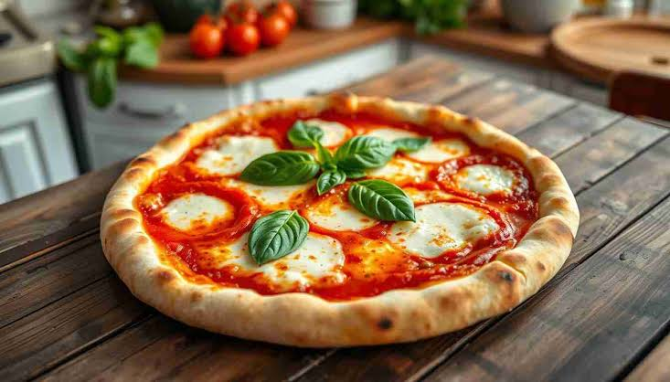

Home
Pizza

Description
This classic homemade Margherita pizza brings the authentic taste of a traditional Italian
pizzeria straight to your kitchen. It features a thin, crispy crust topped with a vibrant,
savory tomato sauce, creamy melted fresh mozzarella cheese, and aromatic fresh basil
leaves. A final drizzle of high-quality extra virgin olive oil ties all the flavors together,
creating a simple yet incredibly satisfying meal.
Perfect for a fun weekend baking project or a casual movie night with friends, this recipe
relies on high-quality ingredients and a very hot oven to achieve its signature texture.
The high heat blisters the crust to perfection while keeping the cheese beautifully
melted and gooey. It is an absolute crowd-pleaser that proves you do not need
complicated toppings to make an unforgettable pizza.
ingredients
- 250g Bread flour (or Type 00 flour for a traditional texture)
- 160ml Warm water
- 1 teaspoon dry yeast
- 1 teaspoon sea salt
- 1 teaspoon Olive oil (plus extra to grease the bowl)
- 1/2 cup Marzano canned crushed tomatoes (seasoned with a pinch of salt)
- 120g mozzarella cheese(sliced or torn into bite-sized pieces)
- 6-8 Fresh basil leaves
- 1 tablespoon Extra virgin olive oil (for drizzling)
- 1 tablespoon semolina flour or cornmeal (to dust your baking sheet/pizza peel)
Steps
- Preheat high: Place your baking stone or inverted baking sheet on the middle rack. Preheat your oven to its absolute maximum temperature, usually 250°C (500°F), for at least 45 minutes.
- Shape the crust: Dust your workspace with a little flour. Gently press and stretch your rested dough ball from the center outward into a 12-inch circle. Leave the edges slightly thicker for the crust.
- Prep the surface: Sprinkle your pizza peel or a second baking sheet with semolina flour or cornmeal. Lay your stretched dough flat on top. Give it a gentle shake to make sure it does not stick.
- Add the sauce: Ladle 1/2 cup of crushed San Marzano tomatoes into the center. Use the back of the spoon to spiral the sauce outward, leaving a 1-inch bare border for the crust.
- Add toppings: Evenly distribute the torn pieces of fresh mozzarella across the sauce. Scatter half of your fresh basil leaves on top now (save the rest for after baking).
- Launch the pizza: Carefully slide the loaded pizza off the peel directly onto the scorching hot preheated baking stone or sheet in the oven.
- Bake: Bake for 7 to 10 minutes. Watch closely; it is done when the crust is puffed and deeply golden-brown, and the cheese is bubbling and slightly browned in spots.
- Finish and serve: Slide the pizza out of the oven. Immediately scatter the remaining fresh basil leaves over the hot cheese and drizzle with extra virgin olive oil. Let it cool for 2 minutes, slice, and serve hot.